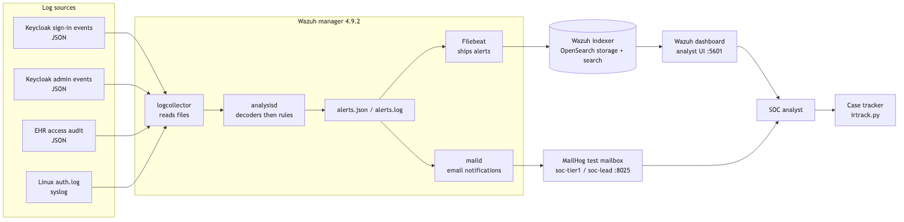
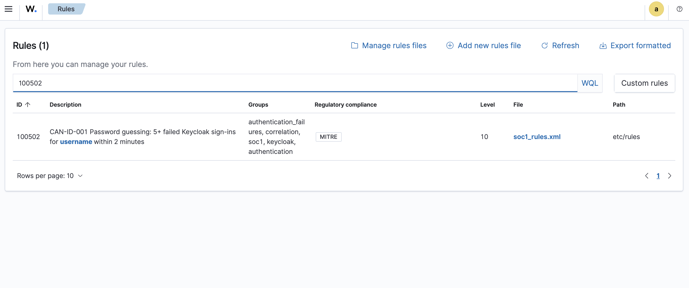
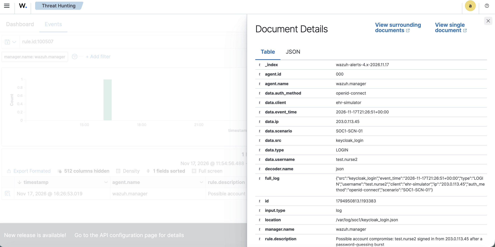

Care Access Navigator
Security Operations Center 1: Final Project Submission
SOC operations, SIEM implementation, threat detection and incident response on a Wazuh SIEM fed with Care Access Navigator logs
| Prepared by: | Akhila Chennamaneni, IAM & GRC Analyst (author) |
| Organization: | HealthLine Regional Medical Center (HRMC), Care Access Navigator (CAN) capstone |
| Course: | Security Operations Center 1 (DAE 6-Month Cybersecurity, Cohort 2) |
| Scope: | All rubric criteria |
| Environment: | Wazuh 4.9.2 single-node SIEM (manager, indexer, dashboard) in Docker; MailHog test mailbox; capstone Keycloak and EHR logs |
| Date: | November 18, 2026 |
| Rubric criterion | Where in this document |
|---|
| Prepare SOC Operations Documentation | Section 1: SOC tools, Mermaid alert-handling and escalation workflow, shift handover, incident handling steps, screenshots |
| Document SIEM Implementation | Section 2: architecture, correlation rules, 4 log sources, email notification settings, screenshots |
| Document Threat Detection Principles | Section 3: how rules work, 3 detection scenarios, indicator categories, analysis method, alert investigation exercise |
| Document Incident Response Methodology | Section 4: initial response protocol, case management, escalation and communication, completed incident template |
Lab at a glance
| Item | Value |
|---|
| Events replayed from the capstone | 513 identity and EHR events (Keycloak sign-ins 192, Keycloak admin 231, EHR access 90) plus the Linux auth.log (615 lines) from the Incident Response 1 lab |
| Alerts generated | 977 in total: 538 from the SOC 1 rules (the rest are Wazuh built-in rules for auth.log and the manager itself); 131 at level 8 or higher |
| Custom SOC rules | 13 rules (IDs 100500–100522) in wazuh_config/soc1_rules.xml, including 3 correlation rules |
| Email notifications | 33 alert emails received in the test mailbox: level 10 to Tier 1; level 12+ to Tier 1 and the SOC lead |
| Investigation scenario | SOC1-SCN-01, compromised nurse account, case SOC1-2026-001 (SEV-1), first response 4.2 min against a 15 min target |
1. SOC Operations Documentation
1.1 Essential SOC tools
| Category | Tool in this lab | Purpose and function |
|---|
| SIEM | Wazuh manager + indexer + dashboard | Collects logs from every source, decodes them into fields, runs detection rules, stores alerts and lets analysts search, filter and pivot. It is the single place where the SOC sees what is happening. |
| Ticketing / case management | irtrack.py (built in Incident Response 1) | Turns a confirmed alert into a case with an ID, severity, owner, status workflow (New → Triage → Contained → Eradicated → Recovered → Closed), timeline, actions, evidence and response-time targets. Nothing is “handled” unless it is in a case. |
| Alerting / notification | Wazuh maild + MailHog mailbox | Pushes high and critical alerts to people instead of waiting for someone to look at the dashboard. MailHog stands in for the hospital mail server so no real email leaves the lab. |
| Host monitoring | Wazuh agent, file integrity monitoring, auditd (IR1 lab) | Watches the endpoint itself: logins, sudo, file changes, process activity. |
| Network monitoring | Wireshark / tshark (IR1 lab) | Captures and filters traffic to confirm what an alert claims, for example where data was sent. |
| Forensics | Volatility 3, dc3dd, Sleuth Kit (IR1 lab) | Memory and disk analysis after containment, with hashes for chain of custody. |
| Identity platform | Keycloak + Microsoft Entra ID (capstone) | Source of sign-in and admin events, and the place where containment happens (disable account, end sessions). |

Screenshot 1: Wazuh dashboard, Threat Hunting, filtered to the SOC 1 rules (rule.groups:soc1): 538 hits. The dashboard shows local time (US Eastern, UTC−5), so 16:27 here is 21:27 UTC.
1.2 SOC workflow: alert handling and escalation (Mermaid)
Source: diagrams/soc_alert_workflow.mmd. Alert level decides who is told and how fast; the analyst's
severity decision (SEV-1 to SEV-4) decides who owns the case.
1.3 Shift transition and handover procedure
The SOC runs three 8-hour shifts (Day 07:00–15:00, Evening 15:00–23:00, Night 23:00–07:00) with a
15-minute overlap. Nothing is left in someone's head: every open item is in the tracker or on the handover form.
- T−30 min (outgoing): update every open case in the tracker (status, last action, next step); close or reassign anything finished.
- T−15 min (outgoing): fill in the handover form below; export
irtrack.py list; note alerts still un-triaged in the dashboard.
- Overlap (both): walk through SEV-1/SEV-2 cases first, then the un-triaged queue, then tool health. The incoming analyst asks questions until they could run each case alone.
- Sign-off: both names and the time go on the form. Ownership of every open case moves to the incoming analyst in the tracker.
- T+15 min (incoming): confirm the dashboard, email alerts and log sources are working (last event time per source).
Handover requirements (must be on every form): open cases with severity, owner and next action; escalations in
progress and who was paged; un-triaged alerts; rule changes or suppressions made this shift; tool or log-source outages;
pending requests to other teams (IT, Privacy Officer); anything waiting on a deadline (for example the HIPAA 60-day clock).
| Shift handover form (completed for the shift that handled SOC1-2026-001) |
|---|
| Date / shift | 2026-11-17, Evening → Night |
| Outgoing / incoming analyst | Akhila Chennamaneni (Tier 1) → Night Tier 1 analyst |
| Open cases | SOC1-2026-001, SEV-1, status Contained. Next: eradication (reset password, review MFA for test.nurse2, confirm no other account used 203.0.113.45), then Privacy Officer breach risk assessment for 18 charts |
| Escalations in progress | Incident Commander and Privacy Officer paged at 21:31 UTC; IC owns containment |
| Un-triaged alerts | 9 × rule 100522 from the historical log replay: known false positives (replay compressed hours into minutes), tuning ticket raised |
| Rule / config changes | None this shift |
| Tool health | Wazuh manager, indexer, dashboard and maild running; all 4 log sources receiving; MailHog receiving |
| Deadlines | HIPAA breach assessment for SOC1-2026-001 (60-day notification clock started at discovery) |
| Sign-off | Outgoing: A. Chennamaneni · Incoming: ________ · Time: ________ |
1.4 Incident handling steps (NIST SP 800-61 template)
| Phase | What the analyst does | In this lab |
|---|
| 1. Preparation | Rules, log sources, notification, playbooks and contacts are ready before anything happens | 13 SOC rules, 4 sources, email routing, playbook CAN-IR-PB-02, tracker |
| 2. Detection and analysis | Receive the alert, validate it, enrich it (who, what, where, when), decide true or false positive, set severity | Dashboard pivot on data.username and data.ip |
| 3. Containment | Stop the damage quickly without destroying evidence (short-term), then hold it (long-term) | Disable account, revoke sessions, block IP |
| 4. Eradication | Remove the cause | Reset credentials, enforce MFA, check for persistence |
| 5. Recovery | Return to normal and watch closely | Re-enable with new password + MFA; heightened monitoring 30 days |
| 6. Post-incident | Root cause, lessons learned, rule tuning, report | Case record, lessons, tuning of 100522 |
2. SIEM Implementation
2.1 SIEM architecture

Source: diagrams/siem_architecture.mmd
| Component | Function and relationship |
|---|
| Log sources | Systems that produce events. Here: Keycloak sign-ins, Keycloak admin changes, EHR access audit (JSON files) and a Linux auth.log (syslog). |
| logcollector | Part of the Wazuh manager (or agent). Tails each configured file (<localfile>) and passes every new line on. |
| analysisd: decoders | Turn a raw line into named fields. The built-in JSON decoder gives username, ip, role, patient_id; the syslog decoders give srcip, dstuser. |
| analysisd: rules | A tree of rules evaluated on the decoded fields. A match produces an alert with a level (0–15), description, groups and MITRE ATT&CK IDs. Correlation rules remember earlier alerts. |
| alerts.json / alerts.log | The manager's alert output, the hand-off point to storage and to email. |
| maild | Sends email for alerts at or above the configured level, with extra routing per level. |
| Filebeat | Ships alerts from the manager to the indexer over TLS. |
| Wazuh indexer (OpenSearch) | Stores and indexes alerts so they can be searched in seconds. |
| Wazuh dashboard | The analyst's web interface: Threat Hunting, rule management, configuration, MITRE view. |
| Agents | Installed on endpoints (as on parrot-vm in IR1) to collect logs, file integrity and inventory and send them to the manager on port 1514. |
2.2 Sample correlation rule
Template: name, purpose, data source, logic, threshold, output, false positives, response.
| Field | Rule 100502: CAN-ID-001 password guessing |
|---|
| Purpose | Detect someone guessing a user's password before they get in |
| Data source | Keycloak sign-in events (src = keycloak_login) |
| Logic | Child rule 100501 marks each LOGIN_ERROR. Rule 100502 fires when 100501 has matched 5 times for the same username within 120 seconds (frequency="5" timeframe="120", if_matched_sid 100501, same_field username). |
| Output | Level 10 alert, MITRE T1110.001, group correlation; emailed to Tier 1 |
| Known false positives | A user who forgot a new password; the lockout test account test.vendor1 |
| Response | Check source IP and whether a success followed (rule 100507); if yes, treat as account compromise |
<rule id="100502" level="10" frequency="5" timeframe="120">
<if_matched_sid>100501</if_matched_sid>
<same_field>username</same_field>
<description>CAN-ID-001 Password guessing: 5+ failed Keycloak sign-ins for $(username) within 2 minutes</description>
<mitre><id>T1110.001</id></mitre>
<group>authentication_failures,correlation,</group>
</rule>
<!-- second-stage correlation: success after the burst -->
<rule id="100507" level="13" timeframe="300">
<if_sid>100506</if_sid> <!-- a successful sign-in -->
<if_matched_sid>100502</if_matched_sid> <!-- that follows a password-guessing alert -->
<same_field>username</same_field> <!-- for the same user, within 5 minutes -->
<description>Possible account compromise: $(username) signed in from $(ip) after a password-guessing burst</description>
</rule>
A third correlation rule, 100522, raises a level 12 alert when one user opens 15 or more patient records within 60 seconds (CAN-ID-007).
All three fired in the investigation scenario (section 3.5). Full rule file: wazuh_config/soc1_rules.xml.

Screenshot 3: the correlation rule in the Wazuh dashboard (Server management → Rules).
2.3 Log sources and their significance
| Source | Format / volume | Why it matters for security monitoring | Detections |
|---|
| Keycloak sign-in events | JSON, 192 events | Every success, failure, lockout and refusal at the identity provider. It is the first place password guessing, leaver sign-ins and unapproved app access show up. | 100501–100507 |
| Keycloak admin events | JSON, 231 events | Who changed roles, groups, users and authentication flows. Privilege changes are how attackers and insiders give themselves more access. | 100511 (53 alerts) |
| EHR access audit | JSON, 90 events | Which user opened which patient record. HIPAA requires this audit trail; it is the only source that shows ePHI actually being read. | 100521, 100522 |
| Linux auth.log (IR1 parrot-vm) | syslog, 615 lines | SSH logins, sudo, new users and groups on a server. Shows host-level misuse that the identity provider never sees. | Built-in 5402, 5715, 5718, 5901, 5902 |
<localfile> <log_format>json</log_format> <location>/var/log/soc1/keycloak_login.json</location> </localfile>
<localfile> <log_format>json</log_format> <location>/var/log/soc1/keycloak_admin.json</location> </localfile>
<localfile> <log_format>json</log_format> <location>/var/log/soc1/ehr_access.json</location> </localfile>
<localfile> <log_format>syslog</log_format> <location>/var/log/soc1/auth.log</location> </localfile>
2.4 Notification settings
Configured in the manager's ossec.conf (excerpt in wazuh_config/ossec_soc1_excerpt.conf):
<global>
<email_notification>yes</email_notification>
<smtp_server>mailhog</smtp_server> <!-- local test mail server -->
<email_from>wazuh-soc@hrmc.lab</email_from>
<email_to>soc-tier1@hrmc.lab</email_to>
<email_maxperhour>100</email_maxperhour>
</global>
<alerts>
<log_alert_level>3</log_alert_level> <!-- store level 3+ -->
<email_alert_level>10</email_alert_level> <!-- email level 10+ to Tier 1 -->
</alerts>
<email_alerts> <!-- escalation routing -->
<email_to>soc-lead@hrmc.lab</email_to>
<level>12</level>
<do_not_delay />
</email_alerts>
Result: 33 emails received. Level 10 alerts (password guessing, disabled-account sign-in) went to Tier 1 only;
level 12 and 13 alerts (unapproved ePHI access, bulk access, account compromise) went to Tier 1 and the SOC lead at the same time.
Wazuh groups several alerts into one email when they arrive together, so there are fewer emails than alerts.

Screenshot 4: the SOC mailbox (MailHog) with Wazuh notifications to soc-tier1 and soc-lead.

Screenshot 5: the level 13 notification sent to soc-lead. Wazuh groups alerts that arrive together, so the email body starts with the related password-guessing alert (rule 100502) and its source events.
3. Threat Detection Principles
3.1 How detection rules work
- Decode, then match. A rule never reads raw text if it can help it; it tests decoded fields (
<field name="role">^billing$</field>).
- Rule tree. A base rule recognises the source (100500 = any Keycloak sign-in event); child rules (
if_sid) narrow it down (100501 = failed sign-in). Only the deepest match becomes the alert.
- Levels. 0–15. Level sets storage (3+), email (10+) and escalation (12+).
- Stateless vs stateful. A stateless rule judges one event (billing user opened a chart). A stateful/correlation rule counts or sequences events (
frequency, timeframe, if_matched_sid, same_field).
- Context. Each rule carries MITRE ATT&CK IDs and groups (for example
hipaa_violation) so the analyst knows the technique and the compliance impact at once.
- Testing. Every rule was checked with
wazuh-logtest before use: the event, the decoded fields and the rule that fires.
**Phase 2: Completed decoding. name: 'json' role: 'billing' username: 'test.billing1' patient_id: 'SYN-PT-10303'
**Phase 3: Completed filtering (rules).
id: '100521' level: '12'
description: 'Unapproved ePHI access: billing user test.billing1 opened view_notes for SYN-PT-10303'
mail: 'True' mitre.technique: '['Valid Accounts']'
**Alert to be generated.
3.2 Three detection scenarios
| Scenario | Example in the data | Rule and result |
|---|
| A. Password guessing → compromise | 6 failed sign-ins for test.nurse2 from 203.0.113.45, then a success from the same IP | 100502 (level 10) then 100507 (level 13). On the historical capstone data, 100502 also fired 16 times, mostly for the lockout test account test.vendor1. |
| B. Leaver or locked account trying to sign in | user_disabled / user_temporarily_disabled errors from the real capstone lockout and leaver tests | 100503 (level 10), 5 alerts; lockout itself shows as 100504 (level 7), proving the control works |
| C. Unapproved or bulk ePHI access | test.billing1 (billing role) opened 18 clinical notes/charts; test.nurse2 opened 18 charts in 26 seconds | 100521 (level 12), 18 alerts; 100522 (level 12) bulk-access correlation |
3.3 Threat indicator categories
| Category | What it is | Example and use here |
|---|
| Atomic indicators | Single values that point to a threat | IP 203.0.113.45, username test.nurse2; used to search for other activity from the same source |
| Computed indicators | Values derived from data, such as file hashes | SHA-256 of evidence files; hashes of malware in IR1 |
| Behavioural indicators | Patterns of activity (TTPs) | Failures then success; 15+ records in 60 s; these are what correlation rules detect |
| Host-based | Seen on an endpoint | New user/group (5901/5902), sudo to root (5402), unexpected cron job |
| Network-based | Seen in traffic | Connection to an unknown outside IP; upload to the drop site in IR1 |
| Identity-based | Seen at the identity provider | Leaver sign-in, privilege change (100511), MFA fatigue |
| IOC vs IOA | Indicator of compromise = evidence after the fact; indicator of attack = activity in progress | The bulk chart access is an IOA (still happening); the outside IP in the logs afterwards is an IOC |
Following the Pyramid of Pain, atomic indicators (IPs) are cheap for an attacker to change, while behaviour (TTPs) is
expensive to change, which is why the SOC 1 rules detect behaviour rather than a fixed list of IPs.
3.4 Structured threat analysis methodology
- Receive and read the alert: rule ID, level, description, MITRE technique, time.
- Validate: open the raw event; confirm the decoded fields are correct and the rule logic matches what happened.
- Enrich: who is the user (role, department, JML status), what is the asset, is the IP internal or outside?
- Scope: pivot on each indicator (user, IP, workstation) over a time window before and after; find related alerts.
- Build the timeline: order every related event; mark first seen, escalation points, last seen.
- Map to ATT&CK: identify tactics and techniques and what the attacker likely does next.
- Decide: true positive, false positive or benign true positive; set severity with the Impact × Urgency matrix.
- Act and document: open or update the case; escalate per section 4.3; record findings and evidence hashes.
3.5 Alert investigation exercise: scenario SOC1-SCN-01
Scenario (synthetic, labelled SOC1-SCN-01 in every event): an outside source guesses the password of
nurse account test.nurse2, gets in, and opens many patient charts. Injected with scenario/feed_logs.py scenario
on 2026-11-17. All patient IDs are synthetic; 203.0.113.45 is a documentation-only IP range.
Process followed (methodology steps in brackets):
- [1] The level 13 email “Possible account compromise” arrived in both the Tier 1 and the SOC lead mailboxes.
- [2] In Threat Hunting, the alert's raw event showed
type: LOGIN, username: test.nurse2, ip: 203.0.113.45, client: ehr-simulator.
- [3] Enrichment:
test.nurse2 is a Nurse in the capstone RBAC model; all 6 earlier Keycloak events for this user came from 172.18.0.1 (the internal lab network). 203.0.113.45 had never been seen.
- [4] Pivot on
data.username: test.nurse2 and data.ip: 203.0.113.45 → 25 related events.
- [5] Timeline built (below).
- [6] ATT&CK: T1110.001 Password Guessing → T1078 Valid Accounts → T1213 Data from Information Repositories.
- [7] Decision: true positive, SEV-1 (ePHI was read through a compromised account: Impact 3 × Urgency 3).
- [8] Case SOC1-2026-001 opened; IC and Privacy Officer paged (section 4).
| UTC (2026-11-17) | Rule (level) | Finding |
|---|
| 21:26:41–21:26:51 | 100501 (5) ×6 | 6 failed sign-ins for test.nurse2 from 203.0.113.45, 2 seconds apart (automated) |
| 21:26:49 | 100502 (10) | Correlation: password guessing; email to Tier 1 |
| 21:26:53 | 100507 (13) | Correlation: successful sign-in from the same IP 12 s after the first failure; email to Tier 1 + SOC lead |
| 21:26:55–21:27:21 | 100520 (3) ×18 | 18 different patient charts (SYN-PT-20100 to 20117) opened from workstation REMOTE-VPN |
| 21:27:17 | 100522 (12) | Correlation: bulk access, 15+ records in 60 s; email to Tier 1 + SOC lead |
Findings: the account was compromised by automated password guessing from an outside IP; 18 patient records were read within 26 seconds of the
sign-in; no MFA challenge appears in the events (Nurse is not an MFA-required role in the capstone model, which is a contributing factor).
Recommendations: extend MFA to all ePHI roles, add geo/IP reputation enrichment, and alert on any sign-in from a never-seen IP for clinical roles.
False positives found during the exercise: rule 100522 also fired 9 times on the historical replay (for example test.clinician1), because the replay
squeezed hours of normal chart access into a few minutes. Real-time data would not trigger it; for the replay, the tuning is to exclude events
older than 1 hour or raise the threshold for clinicians on rounds. This was recorded in the shift handover.

Screenshot 2: the account-compromise alert (rule 100507) expanded in the Wazuh dashboard: user, source IP, client, scenario tag, raw log and the file it came from.
4. Incident Response Methodology
4.1 Initial response protocol: compromised user account
| Time from alert | Step |
|---|
| 0–5 min | Acknowledge the alert; open a case in the tracker (status New); note alert IDs and times |
| 5–10 min | Validate: raw events, source IP history, user's role and JML status; decide true/false positive |
| 10–15 min | Set severity (matrix in 4.3); if SEV-1/2, page IC (and Privacy Officer if ePHI); move case to Triage |
| 15–30 min | Short-term containment: disable the account in Keycloak/Entra, revoke sessions and tokens, block the source IP. Preserve logs before any change |
| 30–60 min | Scope: other accounts from the same IP; records accessed; any privilege changes by this user |
| Ongoing | Update the case at every step; status report to IC every 30 minutes for SEV-1 |
Do not: re-enable the account before the password is reset and MFA is enforced; delete or edit logs; contact the user through a channel the attacker may control.
4.2 Case management system components
| Component | Operational purpose | In irtrack.py |
|---|
| Case record | One ID per incident so everyone refers to the same thing | incident table, ID SOC1-2026-001 |
| Severity and priority | Decides response speed and who is involved | SEV-1..4 with start-response targets 15 / 60 / 480 min / 5 days |
| Status workflow | Shows where the case is; forward-only so history cannot be rewritten | New → Triage → Contained → Eradicated → Recovered → Closed |
| Owner / assignment | Someone is always accountable, including across shifts | handler field |
| Timeline of events | What happened, in order, from the evidence | event table |
| Response actions | What the SOC did, when and with what result | action table |
| Evidence | Links to evidence with hashes for chain of custody | evidence table with SHA-256 |
| Metrics / SLA | Measures time to respond and contain | list: SOC1-2026-001 responded in 4.2 min (target 15, MET), contained in 9.2 min (tabletop) |
| Reporting | Produces the record for management and auditors | report → case_management/SOC1-2026-001_record.md |
$ irtrack.py list
ID SEV STATUS DETECTED RESPOND(min) SLA CONTAIN(min) TITLE
SOC1-2026-001 SEV-1 Contained 2026-11-17T21:26:49Z 4.2 MET 9.2 Compromised nurse account: ...
4.3 Escalation criteria and communication
Severity = Impact × Urgency (each 1–3), as in the IR1 playbook CAN-IR-PB-02.
| Score | Severity | Start response | Escalate to | Communication |
|---|
| 9 | SEV-1 Critical | 15 min | Incident Commander; Privacy Officer if ePHI | Phone/page now; bridge call; updates every 30 min; executive summary within 4 h |
| 6 | SEV-2 High | 60 min | Tier 2 analyst; IC informed | Email + chat; updates every 2 h |
| 3–4 | SEV-3 Medium | 8 h | Tier 1 owns | Case notes; daily summary |
| 1–2 | SEV-4 Low | 5 days | Tier 1 owns | Case notes; weekly report |
Decision points:
- Is the alert a true positive? No → close, tune rule, note in handover.
- Was ePHI read, changed or sent out? Yes → SEV-1 and Privacy Officer (HIPAA four-factor breach risk assessment; 60-day notification clock).
- Did an attacker get a working session or privileges? Yes → at least SEV-2; page IC.
- Is it still happening? Yes → raise urgency by one.
- Can Tier 1 contain it within the SLA with their permissions? No → escalate to Tier 2 / IT administrators.
Communication rules: one IC speaks for the incident; facts only, with times in UTC; no patient data in email or chat
(use case and record IDs); legal, privacy and communications teams decide on any external notice; every message is logged in the case.
4.4 Incident response documentation template (completed for SOC1-SCN-01)
| Field | Entry |
|---|
| Incident ID / title | SOC1-2026-001: Compromised nurse account, password guessing, outside sign-in, bulk chart access |
| Reported by / handler | Wazuh (rules 100502, 100507, 100522) / Akhila Chennamaneni, Tier 1 |
| Date and time detected | 2026-11-17 21:26:49 UTC (first correlation alert) |
| Incident type | Account compromise; unauthorized access to ePHI |
| Severity | SEV-1 (Impact 3: ePHI read × Urgency 3: active session) |
| Affected assets | Keycloak realm care-access-navigator; EHR simulator; account test.nurse2; 18 synthetic patient records |
| Indicators | IP 203.0.113.45; workstation REMOTE-VPN; 6 failures in 10 s then success; 18 charts in 26 s |
| Description | Automated password guessing against test.nurse2 succeeded within 12 seconds; the session was used to open 18 patient charts |
| Detection and analysis | Email alert → dashboard validation → pivot on user and IP → timeline (section 3.5) → true positive |
| Escalation | 21:31 UTC IC and Privacy Officer paged (SEV-1, ePHI) |
| Containment | Disable test.nurse2, revoke sessions, block 203.0.113.45 (tabletop; the live capstone realm was not changed) |
| Eradication | Reset the password; enforce MFA for the Nurse role; check other accounts for sign-ins from the IP |
| Recovery | Re-enable with new credentials and MFA; 30-day heightened monitoring of the account |
| Notification | Privacy Officer: HIPAA four-factor breach risk assessment for 18 records |
| Evidence | E01 evidence/scenario_SOC1-SCN-01_alerts.json (SHA-256 in the case record) |
| Response metrics | First response 4.2 min (target 15, met); containment 9.2 min |
| Root cause | Password-only sign-in for an ePHI role; no lockout reached before success (6 attempts) |
| Lessons learned | MFA for every ePHI role; alert on never-seen IPs; keep the correlation chain 100502 → 100507 → 100522; tune 100522 for replays |
| Status | Contained (tabletop) |
Files in this submission
Path (repository folder security_operations_center_1/) | Content |
|---|
wazuh_config/soc1_rules.xml | The 13 SOC rules |
wazuh_config/ossec_soc1_excerpt.conf | Email notification and log-source settings |
diagrams/*.mmd, *.png | Mermaid sources and images |
scenario/feed_logs.py | Log replay and scenario injection |
evidence/ | Alerts at level 8+ (CSV) and the scenario alerts (JSON) |
case_management/ | Case database and the SOC1-2026-001 record |
screenshots/ | Dashboard and mailbox screenshots |